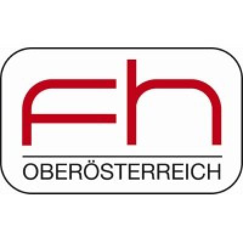

Reverse chronological. Expand a row for the full write-up.
Advisor: Dr. Anastasia Yendiki Deep learning for fiber-bundle segmentation in high-resolution connectomics.
Advisor: Dr. Cindy Hsin-Liu Kao Multi-agent LLMs for physiological signal interpretation.
Advisor: Dr. Jing Han Deep learning for fetal phonocardiography.
Advisor: Dr. Katia Vega Biosensing wearables for cortisol monitoring.
Advisor: Dr. Gerald Adam Zwettler Retrieval-augmented generation for clinical document understanding.
Advisor: Dr. David Cory Resonator design and Bayesian modeling for quantum biosensors.
Advisor: Dr. Gilberto Ochoa-Ruiz Multi-instance learning for kidney stone classification.
Advisor: Dr. Michelle Ploughman Kinematic biomarkers of multiple sclerosis using robotic assessment.
